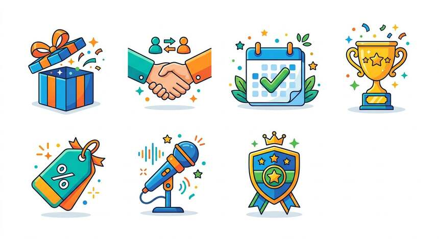
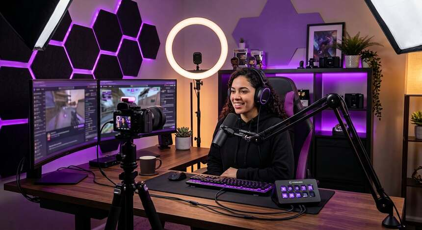
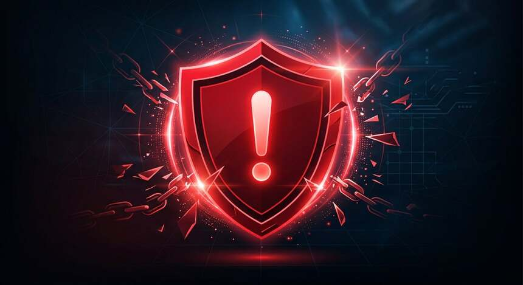
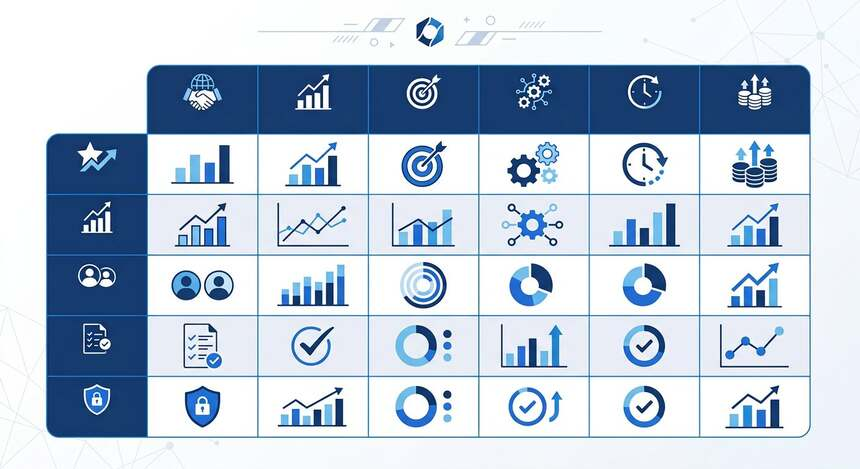
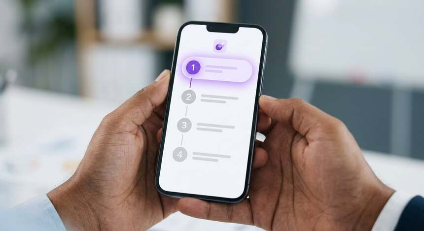

भूमिका – आख़िर सब मुफ़्त टोकन क्यों ढूँढ़ते हैं?
जब भी कोई पहली बार किसी लाइव स्ट्रीमिंग प्लेटफ़ॉर्म पर जाता है, तो सबसे पहले एक ही चीज़ अटकती है – टोकन। आपने खाता बना लिया, पसंदीदा ब्रॉडकास्टर ढूँढ़ लिया, बातचीत शुरू भी हो गई, और तभी स्क्रीन पर एक छोटा-सा नोटिफ़िकेशन आता है कि यह फ़ीचर इस्तेमाल करने के लिए आपके पास पर्याप्त टोकन नहीं हैं। उस वक़्त मन में जो पहला सवाल आता है, वही सवाल हर रोज़ लाखों भारतीय गूगल पर टाइप करते हैं – stripchat tokens kaise paye, और वह भी मुफ़्त में?
मुफ़्त StripChat टोकन की यह खोज बिलकुल स्वाभाविक है। हम में से ज़्यादातर लोग छात्र हैं, नौकरीपेशा हैं या घर चला रहे हैं – हर किसी के पास मनोरंजन पर हर महीने हज़ारों रुपये खर्च करने की छूट नहीं होती। एक तरफ़ जिज्ञासा है, दूसरी तरफ़ जेब की सीमा। इसी फ़र्क़ को भरने के लिए लोग stripchat free tokens hindi, मुफ्त stripchat tokens और bina paise ke stripchat tokens kaise paye जैसे शब्द खोजते हैं। और इंटरनेट पर उन्हें हज़ारों नतीजे भी मिल जाते हैं – कुछ असली, मगर ज़्यादातर ख़तरनाक झूठ।
यहीं से असली समस्या शुरू होती है। गूगल पर "फ़्री टोकन" लिखते ही जो पहली दस साइटें दिखती हैं, उनमें से नौ का मक़सद आपकी मदद करना नहीं, बल्कि आपका नुक़सान करना होता है। वे आपके यूज़रनेम माँगती हैं, एक "वेरिफ़िकेशन फ़ीस" के नाम पर ₹99 से ₹999 तक वसूलती हैं, या फिर एक ऐसा APK डाउनलोड करवाती हैं जो चुपचाप आपका बैंक-ओटीपी और यूपीआई पिन चुरा लेता है। पिछले दो सालों में साइबर क्राइम पोर्टल पर इस किस्म की शिकायतें कई गुना बढ़ी हैं, और इनमें से अधिकांश शिकार अठारह से छब्बीस साल के नौजवान हैं – ठीक वही उम्र जो कॉलेज में या पहली नौकरी में होती है।
इसलिए हमने यह गाइड लिखी है। इसका मक़सद दोहरा है। पहला – आपको वे तरीके बताना जो वाक़ई काम करते हैं, जो प्लेटफ़ॉर्म की शर्तों के भीतर हैं, और जिनमें न तो आपका खाता जाएगा और न ही आपका पैसा। दूसरा – आपको उन झूठे वादों की पहचान करना सिखाना, ताकि अगली बार जब कोई "दस हज़ार फ़्री टोकन, सिर्फ़ एक क्लिक में" दिखाए, तो आप तुरंत समझ जाएँ कि यह घपला है।
आइए सबसे पहले ईमानदारी से एक बात साफ़ कर दें, क्योंकि बाकी पूरी गाइड इसी सच्चाई पर टिकी है। मुफ़्त टोकन मिलते हैं, मगर अनगिनत नहीं मिलते। कोई भी वैध तरीका आपको एक झटके में हज़ारों टोकन नहीं दे देगा। असली तरीके धीमे हैं, थोड़े सब्र माँगते हैं, और उनसे आपको महीने में सौ से पाँच सौ टोकन तक मिल सकते हैं – बशर्ते आप हर रोज़ दस-पंद्रह मिनट दें। यह रक़म लगभग ₹4,000 से ₹25,000 के बराबर बैठती है, जो मनोरंजन के लिहाज़ से कोई छोटी बात नहीं है। मगर "अनलिमिटेड फ़्री टोकन" जैसी कोई चीज़ इस दुनिया में मौजूद नहीं है, और जो भी ऐसा दावा करे, वह या तो झूठ बोल रहा है या आपको फँसाने की कोशिश कर रहा है।
stripchat tokens मुफ्त में कैसे मिलेंगे – इस सवाल का जवाब एक जादुई ट्रिक नहीं है, बल्कि सात अलग-अलग आधिकारिक कार्यक्रमों का सुविचारित मेल है। आगे के हर हिस्से में हम इन्हें एक-एक करके खोलेंगे, बताएँगे कि हर एक में कितना वक़्त लगेगा, कितनी मेहनत लगेगी, कितना जोखिम है, और भारत में बैठे उपयोगकर्ता के लिए वह कितना व्यावहारिक है।
मुफ़्त StripChat टोकन समझने से पहले – StripChat टोकन क्या होते हैं?
आगे बढ़ने से पहले यह समझना ज़रूरी है कि आख़िर टोकन है क्या चीज़, क्योंकि बिना इसे समझे आप न सही तरीका चुन पाएँगे और न ही किसी घोटाले को पहचान पाएँगे। टोकन एक डिजिटल मुद्रा है – सोचिए किसी खेल के सिक्कों की तरह, मगर फ़र्क़ यह है कि इन सिक्कों की असली क़ीमत होती है और इन्हें असली पैसे से ख़रीदा जाता है।
जब आप किसी ब्रॉडकास्टर को टिप देते हैं, कोई निजी शो बुक करते हैं, या कोई ख़ास सुविधा अनलॉक करते हैं, तो आपके बैलेंस से टोकन कटते हैं। यानी टोकन एक खर्च करने का ज़रिया है, कमाने का नहीं। दर्शक के तौर पर टोकन आपके लिए हमेशा एक बाहर जाने वाली चीज़ रहेगी – सिवाय उन मौक़ों के जब प्लेटफ़ॉर्म ख़ुद आपको बोनस के रूप में टोकन दे दे।
भारत में एक टोकन की क़ीमत क्या है?
टोकन की क़ीमत अमेरिकी डॉलर में तय होती है, इसलिए रुपये में उसका मोल विनिमय दर के साथ ऊपर-नीचे होता रहता है। मोटे तौर पर भारत में यह दायरा कुछ ऐसा बैठता है:
| टोकन संख्या | अनुमानित मूल्य (₹) | मुफ़्त तरीकों से मिलने में लगने वाला समय |
|---|---|---|
| 10 टोकन | ₹400 – ₹600 | 1 – 2 दिन (दैनिक लॉगिन + प्रोमो कोड) |
| 50 टोकन | ₹2,000 – ₹3,000 | 3 – 7 दिन (साइन-अप बोनस + कोड + रेफ़रल) |
| 100 टोकन | ₹4,000 – ₹6,000 | 2 – 4 सप्ताह (सभी तरीके एक साथ) |
| 500 टोकन | ₹20,000 – ₹30,000 | 2 – 4 महीने (रेफ़रल + प्रतियोगिताएँ + निष्ठा) |
यह तालिका इसलिए महत्वपूर्ण है क्योंकि इससे आपको एक यथार्थवादी उम्मीद बनती है। जब आप जानते हैं कि पचास टोकन की असली क़ीमत दो से तीन हज़ार रुपये है, तो यह समझना आसान हो जाता है कि कोई वेबसाइट आपको मुफ़्त में दस हज़ार टोकन क्यों नहीं दे सकती – वह रक़म पाँच लाख रुपये के बराबर है, और कोई कंपनी इतना नुक़सान उठाकर मुफ़्त बाँटती नहीं।
टोकन और कॉइन में क्या फ़र्क़ है?
कई उपयोगकर्ता इन दोनों शब्दों में उलझ जाते हैं। stripchat free coins kaise kamaye खोजने वालों को यह बात जान लेनी चाहिए। टोकन मुख्य मुद्रा है – स्थायी, क़ीमती और हर जगह इस्तेमाल होने वाली। कॉइन आमतौर पर किसी विशेष प्रचार या कार्यक्रम के दौरान दी जाने वाली अस्थायी मुद्रा होती है, जिसकी एक समाप्ति तिथि होती है और जो सिर्फ़ चुनिंदा चीज़ों पर खर्च की जा सकती है। दोनों का व्यवहार लगभग एक जैसा है, मगर कॉइन जल्दी खत्म हो जाते हैं। इस गाइड में हमारा ध्यान मुख्यतः टोकनों पर है, क्योंकि वही ज़्यादा मूल्यवान और टिकाऊ हैं।
टोकन वापस मिल सकते हैं या नहीं?
नहीं। एक बार खर्च हो गया टोकन वापस नहीं आता, और न ही दर्शक के तौर पर आप टोकन को वापस असली पैसे में बदल सकते हैं। (ब्रॉडकास्टर्स के मामले में नियम अलग हैं, जिनकी चर्चा हम आगे छठे तरीके में करेंगे।) इसी वजह से मुफ़्त टोकन पाना एक समझदारी भरा क़दम है – आप वही अनुभव ले पाते हैं जिसके लिए आपको अन्यथा अपनी जेब से पैसा देना पड़ता।
क्या टोकन की कोई समाप्ति तिथि होती है?
हाँ, और यह वह बारीकी है जिसे सबसे ज़्यादा लोग नज़रअंदाज़ कर देते हैं। बोनस और प्रचार वाले टोकनों पर आमतौर पर सात से तीस दिन की समय-सीमा होती है। ख़रीदे गए टोकन प्रायः लंबे समय तक चलते हैं। इसलिए मुफ़्त में मिले टोकनों को जमा करके रखने की बजाय जल्दी इस्तेमाल कर लेना बेहतर है। अपने खाते में बैलेंस के साथ-साथ समाप्ति तिथि भी ज़रूर देखें।
7 कानूनी तरीके – StripChat Tokens Earn Karne Ka Tarika
अब आते हैं उस हिस्से पर जिसका आप इंतज़ार कर रहे थे। नीचे सात तरीके दिए गए हैं – हर एक पूरी तरह आधिकारिक है, प्लेटफ़ॉर्म की सेवा-शर्तों के भीतर है, और भारत में बैठे उपयोगकर्ता के लिए व्यावहारिक है। हर तरीके के साथ हम समय, मेहनत, जोखिम और अपेक्षित टोकन संख्या भी बता रहे हैं, ताकि आप अपनी स्थिति के हिसाब से सही चुनाव कर सकें।

तरीका 1: आधिकारिक साइन-अप बोनस – मुफ़्त StripChat टोकन का सबसे तेज़ रास्ता
यह सबसे तेज़, सबसे आसान और सबसे कम जोखिम वाला तरीका है। जब आप पहली बार खाता बनाते हैं, तो प्लेटफ़ॉर्म नए उपयोगकर्ताओं को स्वागत उपहार के रूप में टोकन देता है। stripchat 50 free tokens kaise le खोजने वालों के लिए जवाब सबसे पहले यहीं मिलता है, क्योंकि चल रहे प्रचार के अनुसार यह बोनस पचास टोकन तक पहुँच सकता है।
चरण-दर-चरण प्रक्रिया
- ब्राउज़र में सीधे आधिकारिक वेबसाइट का पता टाइप करें – गूगल के नतीजों से क्लिक न करें, क्योंकि विज्ञापनों में नक़ली साइटें भी आती हैं।
- पते वाली पट्टी में हरे रंग का ताला (HTTPS) ज़रूर देखें।
- Sign Up या Register बटन दबाएँ।
- एक यूज़रनेम चुनें – अपना असली नाम इस्तेमाल न करें, यह निजता के लिए ज़रूरी है।
- मज़बूत पासवर्ड बनाएँ: कम से कम बारह अक्षर, बड़े-छोटे अक्षर, अंक और चिह्न का मेल।
- एक सक्रिय ईमेल पता दर्ज करें (जिमेल सबसे भरोसेमंद रहता है)।
- जन्म तिथि भरें – अठारह वर्ष से कम आयु पर खाता नहीं बनता।
- शर्तें स्वीकार करें और खाता बनाएँ।
- अपने इनबॉक्स में सत्यापन ईमेल खोलें और लिंक पर क्लिक करें।
- डैशबोर्ड पर लौटकर वेलकम बोनस का Claim बटन दबाएँ।
भारतीय उपयोगकर्ताओं के लिए ख़ास सुझाव
अगर सत्यापन ईमेल न आए, तो पहले स्पैम और प्रोमोशन्स फ़ोल्डर देखें। याहू और हॉटमेल जैसे पुराने डोमेन कभी-कभी ब्लॉक हो जाते हैं, इसलिए जिमेल बेहतर विकल्प है। साइन-अप के दौरान VPN इस्तेमाल न करें – विदेशी IP से बना खाता संदिग्ध गतिविधि मानकर बंद कर दिया जाता है। भारत का अपना सामान्य IP पूरी तरह ठीक है। और सबसे ज़रूरी बात: एक ही व्यक्ति एक ही खाता बना सकता है। कई खाते बनाकर कई बार बोनस लेना शर्तों का उल्लंघन है और इससे स्थायी प्रतिबंध लग जाता है।
तरीका 2: रेफ़रल कार्यक्रम – दोस्तों को बुलाइए, टोकन पाइए
अगर आप लंबी अवधि में मुफ़्त StripChat टोकन जोड़ना चाहते हैं, तो रेफ़रल कार्यक्रम सबसे शक्तिशाली तरीका है। आप अपने मित्रों को आमंत्रित करते हैं, और जब वे खाता बनाकर निर्धारित शर्तें पूरी करते हैं, तो आपको कमीशन के रूप में टोकन मिलते हैं। एक सक्रिय रेफ़रल से महीने में पचास से दो सौ टोकन तक मिल सकते हैं।
कैसे काम करता है?
- अपने खाते में लॉगिन करें।
- सेटिंग्स या प्रोफ़ाइल खंड में Referral / Invite Friends ढूँढ़ें।
- अपना अनोखा रेफ़रल लिंक कॉपी करें।
- उसे व्हाट्सऐप, टेलीग्राम या सोशल मीडिया पर अपने सच्चे मित्रों को भेजें।
- जब मित्र खाता बनाकर निर्धारित गतिविधि पूरी करे, तो कमीशन आपके खाते में जुड़ जाएगा।
ईमानदार बात – शर्तें ज़रूर पढ़ें
यहाँ एक भ्रम बहुत आम है। सिर्फ़ खाता बन जाने से कमीशन नहीं मिलता। अधिकांश रेफ़रल कार्यक्रमों में यह शर्त होती है कि आमंत्रित व्यक्ति अपना ईमेल सत्यापित करे और कोई निर्धारित गतिविधि पूरी करे – जैसे पहला टोकन ख़रीद या न्यूनतम सक्रियता। इसलिए अपने मित्रों को पहले से बता दें कि उन्हें क्या करना होगा, ताकि बाद में निराशा न हो।
सोशल मीडिया पर साझा करने का सही तरीका
अगर आप इंस्टाग्राम या यूट्यूब पर सामग्री बनाते हैं, तो अपना रेफ़रल लिंक बायो में रख सकते हैं। मगर पारदर्शिता बनाए रखें – स्पष्ट लिख दें कि यह एक रेफ़रल लिंक है। संदेश के साथ थोड़ा संदर्भ भी भेजें, सिर्फ़ नंगा लिंक नहीं। इससे क्लिक-दर भी बेहतर होती है और सामने वाला व्यक्ति भी सुरक्षित महसूस करता है।
तरीका 3: दैनिक लॉगिन पुरस्कार – रोज़ दो मिनट में मुफ़्त StripChat टोकन
यह सबसे आलसी-अनुकूल तरीका है, और इसीलिए हमारा पसंदीदा भी। प्लेटफ़ॉर्म समय-समय पर ऐसे प्रचार चलाता है जिनमें हर रोज़ लॉगिन करने पर छोटी मात्रा में टोकन, अनुभव अंक या विशेष सुविधाएँ मिलती हैं। stripchat free coins kaise kamaye का सबसे निष्क्रिय जवाब यही है।
क्या करना है?
- हर रोज़ एक बार खाता खोलें – एक मिनट भी काफ़ी है।
- प्रोमोशन्स या इवेंट्स पेज देखें।
- अगर दैनिक इनाम उपलब्ध है, तो Claim बटन दबाएँ।
- लगातार दिनों की श्रृंखला (स्ट्रीक) बनाए रखें – कई बार इस पर गुणक बोनस मिलता है।
ध्यान रखने वाली बात यह है कि यह सुविधा हर समय चालू नहीं रहती। यह मौसमी प्रचारों के रूप में आती-जाती रहती है, इसलिए नियमित जाँच ज़रूरी है। एक छोटा-सा दैनिक अनुशासन – मसलन हर रात नौ बजे भारतीय समयानुसार – महीने भर में तीस से सौ पचास टोकन तक पहुँचा सकता है, और वह भी बिना एक रुपया खर्च किए।
तरीका 4: प्रतियोगिताएँ और कार्यक्रम – Contests aur Events
अगर आपमें थोड़ी किस्मत आजमाने का शौक़ है, तो प्रतियोगिताएँ मुफ़्त StripChat टोकन पाने का सबसे रोमांचक रास्ता हैं। मंच नियमित रूप से प्रश्नोत्तरी, टिप्पणी प्रतियोगिताएँ, त्योहार विशेष उपहार और टोकन-वर्षा जैसे कार्यक्रम चलाता रहता है। विजेताओं को सौ से पाँच सौ टोकन तक मिल सकते हैं।
किस किस्म की प्रतियोगिताएँ होती हैं?
- सोशल मीडिया प्रश्नोत्तरी: आधिकारिक खातों पर सवाल, सही जवाब देने वालों में उपहार।
- श्रेष्ठ टिप्पणी प्रतियोगिता: लाइव शो में सबसे रचनात्मक टिप्पणी करने वालों को इनाम।
- त्योहार विशेष उपहार: दिवाली, होली, नव वर्ष और पंद्रह अगस्त जैसे अवसरों पर बड़े इनाम।
- ब्रॉडकास्टर-आयोजित प्रतियोगिता: अलग-अलग प्रसारक अपने दर्शकों के लिए निजी इनाम रखते हैं।
- मंच-व्यापी टोकन वर्षा: निश्चित समय पर सभी सक्रिय दर्शकों पर टोकन बरसाए जाते हैं।
भाग लेने का सही तरीका
- आधिकारिक सोशल मीडिया खाते फ़ॉलो करें – नीले टिक वाले ही।
- आधिकारिक न्यूज़लेटर की सदस्यता लें।
- इवेंट्स पेज को बुकमार्क करके हर हफ़्ते देखें।
- भाग लेने से पहले नियम ध्यान से पढ़ें – पात्रता, समय-सीमा और इनाम वितरण।
- सिर्फ़ उन्हीं प्रतियोगिताओं में हिस्सा लें जिनकी घोषणा आधिकारिक चैनलों से हुई हो।
तरीका 5: आधिकारिक प्रोमो कोड – stripchat promo code india 2025
प्रोमो कोड मुफ़्त StripChat टोकन पाने का वह तरीका है जिसमें मेहनत सबसे कम और परिणाम सबसे तुरंत मिलता है।
प्रोमो कोड एक छोटा-सा अक्षर-अंक संयोजन होता है जिसे डालने पर आपके खाते में निश्चित संख्या में टोकन जुड़ जाते हैं। यह तरीका नए और पुराने दोनों उपयोगकर्ताओं के लिए काम करता है, और इसमें दो से पाँच मिनट से ज़्यादा वक़्त नहीं लगता।
वैध कोड कहाँ मिलते हैं?
- आधिकारिक प्रोमोशन्स पेज और ब्लॉग।
- आधिकारिक ईमेल न्यूज़लेटर – यहाँ अक्सर वे कोड आते हैं जो सार्वजनिक नहीं होते।
- सत्यापित सोशल मीडिया खाते (नीला टिक)।
- भरोसेमंद जानकारी-साइटें जैसे striptokens.live, जो कोडों की समय-समय पर जाँच करके ही प्रकाशित करती हैं।
कोड कैसे लगाएँ?
- अपने खाते में लॉगिन करें।
- सेटिंग्स में Redeem Code या Promotions खंड खोलें।
- कोड ठीक उसी रूप में डालें जैसे दिया गया है – बड़े-छोटे अक्षरों का ध्यान रखें।
- Apply दबाएँ और सफलता का संदेश आने का इंतज़ार करें।
- टोकन बैलेंस जाँचकर पुष्टि कर लें।
अगर "अमान्य कोड" का संदेश आए, तो घबराइए नहीं। सबसे आम कारण है कोड की समाप्ति तिथि निकल जाना, या उसका उपयोग-परिसीमा पहले ही पूरी हो चुकना। दूसरा कारण होता है कि वह कोड सिर्फ़ नए खातों या किसी ख़ास देश के लिए हो।
तरीका 6: ब्रॉडकास्टर बनना – सबसे बड़ी कमाई, सबसे ज़्यादा मेहनत
यह तरीका उन्हीं लोगों के लिए है जो सामग्री बनाने में दिलचस्पी रखते हैं और मुफ़्त StripChat टोकन से आगे बढ़कर स्थायी कमाई चाहते हैं। ब्रॉडकास्टर के रूप में आपको दर्शकों से टिप और निजी शो के ज़रिए टोकन मिलते हैं, जिन्हें बाद में असली पैसे में बदला जा सकता है। stripchat tokens legally kaise milenge – इस सवाल का सबसे मज़बूत जवाब यही है, क्योंकि यह पूरी तरह क़ानूनी, पारदर्शी और टिकने वाला रास्ता है।

ज़रूरी शर्तें
- अठारह वर्ष या उससे अधिक आयु – यह सख़्ती से लागू होती है और सरकारी पहचान-पत्र से सत्यापन होता है।
- एक ठीक-ठाक कैमरा और पर्याप्त रोशनी (फ़ोन का कैमरा भी शुरुआत के लिए चलेगा)।
- स्थिर इंटरनेट – भारत में कम से कम 10 एमबीपीएस अपलोड गति।
- कैमरे के सामने सहज होना और लगातार प्रसारण करने का अनुशासन।
- मंच के नियमों की पूरी समझ – क्या दिखाना अनुमत है और क्या नहीं।
शुरुआत कैसे करें?
- ब्रॉडकास्टर आवेदन जमा करें।
- आयु और पहचान सत्यापन पूरा करें।
- प्रोफ़ाइल तैयार करें – परिचय, प्रसारण समय-सारणी और क़ीमतें।
- पहला परीक्षण प्रसारण निजी मोड में करें।
- नियमित समय पर लाइव हों और धीरे-धीरे दर्शक-समूह बनाएँ।
भारतीय प्रसारकों के लिए व्यावहारिक बातें
भारत में यह रास्ता चुनने वालों को तीन अतिरिक्त बातों का ध्यान रखना चाहिए। पहला – निजता: अधिकांश भारतीय प्रसारक उपनाम का उपयोग करते हैं और अपना असली चेहरा या पता कभी साझा नहीं करते। दूसरा – भुगतान: कमाई निकालने के लिए अंतरराष्ट्रीय माध्यम जैसे पेओनियर या पैक्सम इस्तेमाल होते हैं, जो भारत में उपलब्ध हैं; सीधे भारतीय बैंक खाते में अंतरराष्ट्रीय भुगतान प्राप्त करने में कभी-कभी देरी होती है। तीसरा – कर: यह आय करयोग्य है, इसलिए आयकर और जीएसटी के नियमों के बारे में किसी चार्टर्ड अकाउंटेंट से सलाह ले लें।
एक और बात साफ़ कर दें – यह तरीका तकनीकी रूप से "मुफ़्त टोकन" नहीं है। इसमें आप अपना समय, ऊर्जा और निजता का एक हिस्सा निवेश करते हैं। मगर दर्शक की नज़र से देखें तो यह इकलौता ऐसा रास्ता है जहाँ टोकन कमाई का स्थायी ज़रिया बन सकता है।
तरीका 7: निष्ठा कार्यक्रम – धीमा मगर पक्का रास्ता
StripChat अपने पुराने और नियमित उपयोगकर्ताओं को भुलाता नहीं है। वीआईपी श्रेणियाँ, विशेष बैज और अनन्य सुविधाएँ – ये सब उन लोगों के लिए हैं जो लंबे समय से जुड़े हुए हैं। stripchat free tokens trick hindi खोजने वालों को समझ लेना चाहिए कि यह कोई छिपी हुई चाल नहीं, बल्कि एक खुली और आधिकारिक निष्ठा प्रणाली है।
निष्ठा से क्या-क्या मिलता है?
- वीआईपी श्रेणी बढ़ने पर बोनस टोकन।
- केवल निष्ठावान उपयोगकर्ताओं के लिए ख़ास प्रोमो कोड।
- नई सुविधाओं तक पहले पहुँच।
- विशेष कार्यक्रमों का निमंत्रण।
- टोकन ख़रीद पर छूट – यानी कम पैसे में ज़्यादा टोकन।
इस तरीके की ख़ासियत यह है कि आपको कोई अतिरिक्त काम नहीं करना पड़ता। आप जो पहले से कर रहे हैं – नियमित लॉगिन, सभ्य व्यवहार, सक्रिय भागीदारी – वही धीरे-धीरे निष्ठा अंक जोड़ता जाता है। महीनों की बात है, मगर जो मिलता है वह टिकाऊ होता है। stripchat tokens मुफ्त में कैसे मिलेंगे – निष्ठा कार्यक्रम इसका सबसे शांत और सबसे भरोसेमंद उत्तर है।
चेतावनी – मुफ़्त StripChat टोकन के नाम पर होने वाले स्कैम से बचें

यह खंड पूरी गाइड का सबसे ज़रूरी हिस्सा है, ख़ासकर भारतीय उपयोगकर्ताओं के लिए। ऊपर बताए सातों तरीके आपको कुछ सौ टोकन दिला सकते हैं; नीचे बताई सावधानियाँ आपका बैंक खाता, आपकी निजता और आपका फ़ोन बचा सकती हैं। फ़र्क़ साफ़ है।
सीधा जवाब: stripchat tokens generator real hai ya fake
फ़र्ज़ी। सौ प्रतिशत फ़र्ज़ी। इसमें कोई अपवाद नहीं है, कोई "काम करने वाला एक जेनरेटर" नहीं है, और कोई "नया तरीका" नहीं है जो बाक़ी सबके बाद भी चल जाए।
इसका तकनीकी कारण समझना ज़रूरी है, क्योंकि एक बार यह समझ आ जाए तो आप दोबारा कभी किसी जेनरेटर पर विश्वास नहीं करेंगे। टोकन आपके फ़ोन या ब्राउज़र में नहीं रखे जाते – वे कंपनी के सर्वर पर एक सुरक्षित डेटाबेस में रहते हैं। आपका फ़ोन सिर्फ़ वह संख्या देखता है जो सर्वर उसे भेजता है। कोई भी बाहरी वेबसाइट या ऐप उस सर्वर में घुसकर संख्या नहीं बदल सकती। जो साइटें ऐसा करने का दावा करती हैं, वे या तो आपका यूज़रनेम-पासवर्ड चुरा रही हैं, या आपके डिवाइस में मैलवेयर डाल रही हैं, या "वेरिफ़िकेशन फ़ीस" के नाम पर पैसे वसूल रही हैं – कभी टोकन नहीं दे रही हैं।
भारतीय उपयोगकर्ताओं को निशाना बनाने वाले सात आम घोटाले
- नक़ली जेनरेटर वेबसाइटें: "यूज़रनेम डालिए, हज़ार फ़्री टोकन पाइए"। असल में ये लॉगिन पृष्ठ की नक़ल करती हैं और आपका पासवर्ड सीधे घोटालेबाज़ों तक पहुँचा देती हैं। अगले दिन आपका खाता ख़ाली मिलेगा।
- मॉड APK के दावे: "StripChat Mod APK unlimited tokens" – यह भारत में सबसे ख़तरनाक घोटाला है। डाउनलोड होते ही की-लॉगर, स्पायवेयर या बैंकिंग ट्रोजन स्थापित हो जाता है। कई मामलों में यूपीआई पिन और ओटीपी चोरी होकर रातों-रात खाता ख़ाली हो गया।
- व्हाट्सऐप और टेलीग्राम समूह: "हर रोज़ फ़्री टोकन" के नाम पर बनाए गए समूह पहले कुछ स्क्रीनशॉट दिखाते हैं, फिर "प्रोसेसिंग फ़ीस" ₹99 से ₹999 तक माँगते हैं। फ़ीस जाने के बाद न टोकन मिलते हैं, न कोई जवाब।
- नक़ली ग्राहक सहायता: सोशल मीडिया पर "ऑफ़िशियल सपोर्ट" नाम के खाते जो मदद का वादा करके आपका लॉगिन, ओटीपी या बैंक विवरण माँगते हैं। असली सहायता कभी पासवर्ड या ओटीपी नहीं माँगती – कभी नहीं।
- सर्वेक्षण घोटाले: "पाँच सर्वे पूरे करो, दो सौ टोकन पाओ"। सर्वे के बहाने आपका फ़ोन नंबर, ईमेल और रुचियाँ एकत्र करके विज्ञापन कंपनियों को बेच दी जाती हैं। टोकन कभी नहीं आते।
- फ़िशिंग ईमेल: "आपके खाते में बोनस जोड़ा गया है – यहाँ क्लिक करें"। क्लिक करते ही एक बिलकुल असली दिखने वाला लॉगिन पृष्ठ खुलता है, जो असल में नक़ली होता है। विवरण भरते ही खाता गया।
- टोकन निवेश घोटाले: "₹5,000 लगाइए, ₹50,000 के टोकन पाइए" – यह सीधी पोंज़ी योजना है। पहले दो-तीन लोगों को थोड़ा लाभ दिखाया जाता है, फिर बड़ी रक़म लेकर संचालक गायब हो जाता है।
घोटाले की पहचान – सात लाल झंडे
- वेबसाइट पर कोई संपर्क पता, कंपनी का नाम या क़ानूनी पृष्ठ (नियम, निजता नीति) नहीं है।
- "असीमित", "दस हज़ार फ़्री टोकन" जैसे अवास्तविक वादे।
- टोकन देने से पहले किसी भी नाम पर पैसा माँगा जाए।
- पासवर्ड, ओटीपी, यूपीआई पिन या बैंक विवरण माँगा जाए।
- APK, EXE या कोई फ़ाइल डाउनलोड करने को कहा जाए।
- नक़ली उलटी गिनती ("सिर्फ़ पाँच मिनट बचे!") और नक़ली समीक्षाएँ।
- डोमेन नाम में टाइपो या अजीब प्रत्यय – जैसे .xyz, .top, .info के साथ "free-tokens-generator"।
अगर आप घोटाले का शिकार हो गए हैं तो तुरंत क्या करें
- पहला क़दम: मंच का पासवर्ड बदलें और दो-चरणीय सत्यापन (2FA) चालू करें।
- अगर पैसा गया है: अपने बैंक या यूपीआई ऐप को तुरंत सूचित करें। साइबर क्राइम हेल्पलाइन 1930 पर कॉल करें – यह निःशुल्क है और चौबीसों घंटे चालू रहती है।
- शिकायत दर्ज करें: cybercrime.gov.in पर ऑनलाइन शिकायत भरें। प्रमाण के लिए स्क्रीनशॉट, लेन-देन विवरण और चैट रिकॉर्ड सुरक्षित रखें।
- डिवाइस साफ़ करें: विश्वसनीय एंटीवायरस से स्कैन करें; संदेह हो तो फ़ैक्टरी रीसेट सबसे सुरक्षित है।
- बैंक को बताएँ: यूपीआई पिन, कार्ड विवरण या ओटीपी साझा किया था तो कार्ड ब्लॉक करवाएँ और पिन बदलें।
- आधिकारिक सहायता को रिपोर्ट करें: ताकि उस नक़ली खाते या समूह पर कार्रवाई हो सके।
क़ानूनी पक्ष – stripchat tokens hack legal alternative क्यों ज़रूरी है
stripchat free tokens trick hindi खोजते हुए कई नौजवान हैकिंग ट्यूटोरियल तक पहुँच जाते हैं। यहाँ स्पष्ट कर दें: किसी भी प्रणाली में अनधिकृत प्रवेश भारत में सूचना प्रौद्योगिकी अधिनियम, 2000 की धारा 43 और 66 के तहत दंडनीय अपराध है – तीन वर्ष तक की क़ैद और पाँच लाख रुपये तक का जुर्माना। नाबालिगों के मामले में पॉक्सो अधिनियम के तहत सज़ा और भी कठोर है।
दूसरी तरफ़, ऊपर बताए सातों तरीके पूरी तरह क़ानूनी हैं। इनमें न कोई धारा लगती है, न खाता जाता है, न पैसा। यही "वैध विकल्प" है जो आप ढूँढ़ रहे थे।
समय बनाम टोकन – मुफ़्त StripChat टोकन के सभी तरीकों की तुलना
अब तक आपने सातों तरीके पढ़ लिए। सवाल यह है कि आपके लिए कौन-सा सही है – यह आपकी उपलब्धता, धैर्य और लक्ष्य पर निर्भर करता है। नीचे दी गई तालिका एक नज़र में पूरा चित्र दे देती है।

| तरीका | समय | अपेक्षित टोकन | मेहनत | जोखिम | किसके लिए सर्वोत्तम |
|---|---|---|---|---|---|
| 1. साइन-अप बोनस | 5–10 मिनट | 20 – 50 | बहुत कम | शून्य | नए उपयोगकर्ता – आज ही शुरू करना चाहते हैं |
| 2. रेफ़रल कार्यक्रम | जारी रहता है | 10 – 100+ प्रति रेफ़रल | मध्यम | कम | जिनके पास मित्र-समूह या सोशल मीडिया फ़ॉलोअर्स हैं |
| 3. दैनिक लॉगिन इनाम | 1–2 मिनट रोज़ | 1 – 5 प्रति दिन | बहुत कम | शून्य | व्यस्त लोग जो रोज़ थोड़ा समय दे सकते हैं |
| 4. प्रतियोगिताएँ | परिवर्तनशील | 0 – 500+ | कम | कम | किस्मत आजमाने वाले, सोशल मीडिया पर सक्रिय लोग |
| 5. प्रोमो कोड | 2–5 मिनट | 5 – 50 | बहुत कम | शून्य | सबके लिए – सबसे कम मेहनत, तुरंत परिणाम |
| 6. ब्रॉडकास्टर | रोज़ाना घंटों | असीमित संभावना | बहुत अधिक | मध्यम | गंभीर सामग्री-निर्माता, निजता संभाल सकने वाले |
| 7. निष्ठा कार्यक्रम | महीने | नियमित बोनस | कम | शून्य | लंबी अवधि सोचने वाले नियमित उपयोगकर्ता |
आपकी स्थिति के हिसाब से सुझाव
- आज ही टोकन चाहिए? साइन-अप बोनस + एक वैध प्रोमो कोड = 25 से 100 टोकन, एक ही दिन में।
- समय है, पैसा नहीं? दैनिक लॉगिन + प्रतियोगिताएँ + रेफ़रल का मेल।
- गंभीर कमाई चाहिए? ब्रॉडकास्टर बनने पर विचार करें, मगर मेहनत और निजता की क़ीमत समझकर।
- लंबी अवधि का पक्का रास्ता? निष्ठा कार्यक्रम + रेफ़रल – महीनों में टिकाऊ परिणाम।
यथार्थवादी अपेक्षा क्या रखें?
अगर आप लगातार सभी तरीकों का उपयोग करें, तो मुफ़्त StripChat टोकन की मासिक संख्या लगभग सौ से पाँच सौ तक पहुँच सकती है – यह ₹4,000 से ₹25,000 की बचत के बराबर है। bina paise ke stripchat tokens kaise paye – इस सवाल का यही ईमानदार उत्तर है। मगर ध्यान रखें, यह "बचत" है, "आमदनी" नहीं। टोकनों को बेचकर पैसा नहीं बनाया जा सकता (सिवाय ब्रॉडकास्टर के)। इसलिए इसे मनोरंजन बजट की नज़र से देखें, पैसे कमाने की योजना की नज़र से नहीं।
चरण-दर-चरण गाइड – मुफ़्त StripChat टोकन कैसे पाएँ, शुरुआत से अंत तक

अब सिद्धांत छोड़कर व्यवहार पर आते हैं। नीचे दस चरण हैं जो आपको ख़ाली हाथ से पहले टोकन तक ले जाएँगे। यह ट्यूटोरियल मोबाइल के लिए बनाया गया है, क्योंकि भारतीय ट्रैफ़िक का बड़ा हिस्सा स्मार्टफ़ोन से आता है, और धीमे इंटरनेट पर भी इसे आसानी से पढ़ा जा सकता है।
चरण 1: तैयारी – पहले यह सब रखें तैयार
- एक सक्रिय ईमेल पता (जिमेल सबसे भरोसेमंद)।
- स्थिर इंटरनेट – 2G/3G पर भी चलेगा, मगर WiFi बेहतर है।
- नवीनतम संस्करण वाला ब्राउज़र – क्रोम, फ़ायरफ़ॉक्स या सफ़ारी।
- आयु प्रमाण – अठारह वर्ष से अधिक होने की पुष्टि के लिए।
अगर आप परिवार का साझा डिवाइस इस्तेमाल कर रहे हैं – जो भारतीय घरों में बहुत आम है – तो गुप्त (Incognito) मोड में काम करें और बाद में ब्राउज़र इतिहास व कैश साफ़ कर दें।
चरण 2: आधिकारिक वेबसाइट खोलें
ब्राउज़र में पता सीधे टाइप करें। गूगल खोज से क्लिक करने की बजाय यह तरीक़ा कहीं सुरक्षित है, क्योंकि खोज नतीजों में विज्ञापन के रूप में नक़ली साइटें सबसे ऊपर आती हैं। पते वाली पट्टी में HTTPS ताला और सही वर्तनी दोनों जाँचें – घोटालेबाज़ अक्सर एक अक्षर बदल देते हैं।
चरण 3: साइन अप करें
- Sign Up बटन पर टैप करें।
- यूज़रनेम चुनें – असली नाम से बचें, यह आपकी पहचान है।
- मज़बूत पासवर्ड बनाएँ और उसे किसी अन्य साइट के पासवर्ड से अलग रखें।
- वैध ईमेल पता दर्ज करें।
- जन्म तिथि भरें।
- नियम व शर्तें स्वीकार करें – एक बार उन्हें पढ़ लेना बेहतर है।
- Create Account दबाएँ।
चरण 4: ईमेल सत्यापन पूरा करें
पाँच से दस मिनट में सत्यापन ईमेल आ जाना चाहिए। न मिले तो स्पैम और प्रोमोशन्स फ़ोल्डर देखें। लिंक पर क्लिक करते ही खाता सक्रिय हो जाएगा। यह चरण अनिवार्य है – बिना सत्यापन के वेलकम बोनस नहीं मिलता।
चरण 5: वेलकम बोनस प्राप्त करें – पहला मुफ़्त StripChat टोकन
सत्यापन के बाद डैशबोर्ड पर स्वागत-उपहार का बैनर या सूचना दिखेगी। Claim बटन दबाते ही टोकन आपके बैलेंस में जुड़ जाएँगे। पुष्टि के लिए ऊपर दाईं ओर टोकन गिनती देखें।
चरण 6: रेफ़रल लिंक निकालें
- प्रोफ़ाइल या सेटिंग्स खोलें।
- Referral / Invite खंड में जाएँ।
- अपना अनोखा लिंक कॉपी करें।
- व्हाट्सऐप पर करीबी मित्रों को एक स्पष्ट संदेश के साथ भेजें – थोक प्रचार न करें।
चरण 7: प्रोमो कोड लगाएँ
- प्रोमोशन्स पृष्ठ पर उपलब्ध कोड देखें और समाप्ति तिथि नोट करें।
- Redeem Code खंड में कोड चिपकाएँ।
- Apply दबाएँ।
- सफलता संदेश आने पर बैलेंस जाँचें।
चरण 8: सुरक्षा सेटअप – यह चरण कभी न छोड़ें
अधिकांश लोग यही चरण छोड़ देते हैं, और बाद में पछताते हैं। पाँच मिनट में यह सब कर लें:
- दो-चरणीय सत्यापन (2FA) चालू करें।
- लॉगिन अलर्ट सक्रिय करें – नए डिवाइस से प्रवेश होने पर सूचना मिलेगी।
- रिकवरी ईमेल या फ़ोन नंबर जोड़ें।
- पासवर्ड प्रबंधक का उपयोग करें; एक ही पासवर्ड हर जगह न लगाएँ।
- सक्रिय सत्र (sessions) नियमित रूप से देखें और अज्ञात डिवाइस लॉगआउट करें।
चरण 9: दैनिक दिनचर्या बनाएँ
हर रोज़ एक निश्चित समय – जैसे रात नौ बजे भारतीय मानक समय – पर लॉगिन करें। प्रचार देखें, दैनिक इनाम लें, और नई प्रतियोगिताएँ जाँचें। यह दो मिनट का अनुशासन महीने भर में तीस से सौ पचास टोकन तक ला सकता है।
चरण 10: रिकॉर्ड रखें और सुधार करें
एक साधारण नोट रखें – गूगल कीप या कागज़ की कॉपी में – कि कौन-सा तरीका कितने टोकन दे रहा है। तीस दिन बाद समीक्षा करें और कम फ़ायदेमंद तरीकों पर समय देना बंद कर दें। यही छोटी सी आदत stripchat tokens earn karne ka tarika को असल में अधिकतम करती है।
अधिकतम मुफ़्त StripChat टोकन पाने के 10 व्यावहारिक सुझाव
तरीके जान लेना आधा काम है; असली फ़र्क़ उन्हें समझदारी से इस्तेमाल करने में पड़ता है। नीचे दस सुझाव हैं जो वही सात तरीके दोगुने-तिगुने परिणाम देने लगते हैं। ध्यान रहे – ये सब वैध सुझाव हैं, कोई गुप्त चाल नहीं।
1. सभी तरीकों को एक साथ चलाएँ
सबसे बड़ी ग़लती यह है कि लोग किसी एक तरीके से चिपक जाते हैं। साइन-अप बोनस + दैनिक लॉगिन + प्रोमो कोड + रेफ़रल – चारों एक साथ चलाने पर महीने की टोकन-आय तीन से चार गुना बढ़ जाती है। कुल मिलाकर दिन में दस से पंद्रह मिनट काफ़ी हैं।
2. सूचनाएँ चालू रखें
मोबाइल सूचनाएँ सक्रिय कर लें। नई प्रतियोगिता, नया प्रोमो कोड या ख़ास कार्यक्रम की जानकारी तुरंत मिल जाएगी। कई बार कोड सीमित संख्या में होते हैं – "पहले आओ, पहले पाओ" का नियम यहाँ पूरा लागू होता है।
3. न्यूज़लेटर की सदस्यता लें
आधिकारिक ईमेल न्यूज़लेटर में वे प्रोमो कोड आते हैं जो सार्वजनिक रूप से प्रकाशित नहीं होते। यह सबसे कम आँका गया तरीका है। नीचे दिए फ़ॉर्म से आप हमारा हिंदी न्यूज़लेटर भी जोड़ सकते हैं – हम हर हफ़्ते सत्यापित कोड और नए घोटालों की चेतावनी भेजते हैं।
4. कम-व्यस्त घंटों का लाभ उठाएँ
भारतीय मानक समयानुसार सुबह छह से दस बजे के बीच अमेरिकी और यूरोपीय उपयोगकर्ता सो रहे होते हैं, इसलिए मंच पर भीड़ कम होती है। इसी समय कई ऑफ़-पीक प्रचार सक्रिय रहते हैं और प्रतियोगिता जीतने की संभावना बढ़ जाती है। सप्ताह के दिनों की सुबह सबसे अनुकूल रहती है।
5. त्योहारों के मौसम में सतर्क रहें
दिवाली, होली, नव वर्ष, पंद्रह अगस्त और प्रेम दिवस पर बड़े प्रचार चलते हैं। इन तिथियों को अपने कैलेंडर में पहले से अंकित कर लें। दिवाली उपहारों में सौ से पाँच सौ टोकन तक मिलने के उदाहरण मिले हैं।
6. रेफ़रल को नैतिक ढंग से इस्तेमाल करें
थोक प्रचार से खाता बंद होता है – यह बार-बार दोहराने लायक़ बात है। सिर्फ़ उन्हीं लोगों को आमंत्रित करें जिन्हें सचमुच रुचि हो। संदेश के साथ थोड़ा संदर्भ जोड़ें: "यह मेरा रेफ़रल लिंक है, साइन अप करने पर हम दोनों को टोकन मिलते हैं।" पारदर्शिता से भरोसा बढ़ता है और परिणाम भी।
7. डेटा और बैटरी बचाएँ
भारतीय उपयोगकर्ताओं के लिए हर जीबी मायने रखता है। मोबाइल संस्करण इस्तेमाल करें, वीडियो को कम गुणवत्ता (480p) पर चलाएँ, और फ़ालतू टैब बंद रखें। ब्राउज़र का डेटा-सेवर मोड चालू करें। लाइव प्रसारण के लिए WiFi बेहतर है, बाक़ी सब काम 4G पर आसानी से हो जाते हैं।
8. कई खाते बनाने से बचें
यह लालच स्वाभाविक है – "पाँच खाते बनाओ, पाँच वेलकम बोनस लो।" मगर डिवाइस फ़िंगरप्रिंटिंग, IP ट्रैकिंग और भुगतान-विधि मिलान के कारण यह पकड़ा जाता है। पकड़े जाने पर सभी खाते स्थायी रूप से बंद हो जाते हैं और सारे टोकन ज़ब्त कर लिए जाते हैं। एक खाते पर टिके रहें और सातों तरीके उसी पर इस्तेमाल करें।
9. सिर्फ़ सत्यापित स्रोतों पर भरोसा करें
कोड और प्रचार की जानकारी के लिए भरोसेमंद साइटें देखें, जैसे stripfreetokens.com और striptks.live। ये साइटें कोडों की जाँच करके ही प्रकाशित करती हैं और नए घोटालों की चेतावनी भी देती हैं। किसी अनजान टेलीग्राम समूह के भरोसे काम न करें।
10. अपनी सीमाएँ तय करें – सबसे ज़रूरी सुझाव
मुफ़्त टोकन मिलने के बाद भी समय और पैसे का ज़िम्मेदार प्रबंधन करें। एक मासिक सीमा तय करें और उससे ऊपर न जाएँ। अगर लगे कि मंच पर बहुत ज़्यादा समय या पैसा जा रहा है, तो कुछ दिन का विराम लें। मनोरंजन, मनोरंजन ही रहना चाहिए – आदत नहीं बनना चाहिए। ज़रूरत पड़ने पर आइकॉल हेल्पलाइन (9152987821) या वंद्रेवल फ़ाउंडेशन (1860-2662-345, चौबीसों घंटे, निःशुल्क) से बात कर सकते हैं।
भारतीय उपयोगकर्ताओं के लिए खास जानकारी
stripchat free tokens india खोजने वालों के लिए – यानी मुफ़्त StripChat टोकन भारत में कैसे काम करते हैं – कुछ बातें विशेष रूप से जानना ज़रूरी है, क्योंकि भारतीय संदर्भ पश्चिमी देशों से काफ़ी अलग है – भुगतान के साधन, इंटरनेट गति, निजता की चिंताएँ और क़ानूनी ढाँचा, सब भिन्न हैं।
भुगतान के साधन – यूपीआई, पेटीएम और कार्ड
यह गाइड मुफ़्त तरीकों पर केंद्रित है, मगर अगर कभी आपको टोकन ख़रीदने की ज़रूरत पड़े, तो भारत में ये विकल्प उपलब्ध हैं:
- यूपीआई (गूगल पे, फ़ोनपे, पेटीएम): सबसे तेज़ और लोकप्रिय, मगर अंतरराष्ट्रीय व्यापारी होने के कारण लेन-देन कभी-कभी विफल हो जाता है।
- क्रेडिट / डेबिट कार्ड (वीज़ा, मास्टरकार्ड): सबसे भरोसेमंद विकल्प। बस अपने बैंक ऐप से अंतरराष्ट्रीय लेन-देन सक्रिय कर लें।
- नेट बैंकिंग: उपलब्ध है, मगर प्रसंस्करण धीमी होती है।
- क्रिप्टोकरेंसी: तकनीकी रूप से संभव, मगर भारत में तीस प्रतिशत कर और एक प्रतिशत टीडीएस के कारण व्यावहारिक नहीं।
निजता की दृष्टि से महत्वपूर्ण: बैंक विवरणपत्र पर व्यापारी का नाम स्पष्ट रूप से दिख सकता है, जो भारतीय परिवारों में संवेदनशील बात है। इसके लिए वर्चुअल कार्ड (एचडीएफ़सी या आईसीआईसीआई वर्चुअल डेबिट) उपयोग करना बेहतर रहता है, और डिस्क्रीट बिलिंग विकल्प उपलब्ध हों तो उन्हें चुनें।
मुद्रा और लागत – रुपये में समझें
टोकन की क़ीमत डॉलर में तय होती है, इसलिए विनिमय दर बदलने पर रुपये में रक़म ऊपर-नीचे होती रहती है। एक टोकन लगभग ₹40–₹60 के बीच बैठता है, यानी पचास टोकन की क़ीमत दो से तीन हज़ार रुपये। जब आप इस हिसाब से देखते हैं, तो मुफ़्त तरीकों की असली क़ीमत समझ आती है। बस यह याद रखें – यह बचत है, कमाई नहीं।
इंटरनेट गति और मोबाइल अनुकूलन
भारत में औसत मोबाइल गति पंद्रह से बीस एमबीपीएस है, मगर छोटे शहरों और ग्रामीण क्षेत्रों में दो से पाँच एमबीपीएस ही मिलती है। इसलिए:
- लाइव प्रसारण 480p पर देखें – एचडी की तुलना में लगभग साठ प्रतिशत कम डेटा लगता है।
- भारी छवि वाले पृष्ठों से बचें।
- पृष्ठभूमि टैब बंद रखें।
- ब्राउज़र का डेटा-सेवर मोड चालू करें।
यह पृष्ठ भी उसी को ध्यान में रखकर बनाया गया है – हल्का एचटीएमएल, लेज़ी-लोड वीडियो और संपीडित छवियाँ। धीमे 3G पर भी यह तीन-चार सेकंड में खुल जाता है।
समय क्षेत्र – भारतीय मानक समय के अनुसार सर्वोत्तम घंटे
- सुबह 6 – 9 बजे (IST): सबसे कम भीड़; प्रचार और कोड पकड़ने का अनुकूल समय।
- रात 9 बजे – 1 बजे (IST): यूरोपीय शाम; सक्रिय प्रतियोगिताएँ और बड़ी संख्या में लाइव शो।
- दोपहर 12 – 4 बजे (IST): अमेरिकी देर रात; सबसे शांत अवधि।
क़ानूनी पक्ष – भारत में क्या अनुमत है
यह संवेदनशील विषय है, इसलिए सीधे और स्पष्ट शब्दों में कहते हैं। भारत में अठारह वर्ष से अधिक आयु के सहमति-समर्थ वयस्कों द्वारा निजी तौर पर सामग्री देखना तकनीकी रूप से दंडनीय अपराध नहीं है। मगर वितरण और होस्टिंग पर सूचना प्रौद्योगिकी अधिनियम 2000 एवं आईटी नियम 2021 के तहत कड़े प्रतिबंध हैं, और कई वयस्क वेबसाइटें सरकार द्वारा अवरुद्ध की जा चुकी हैं।
अनुमत क्या है
- अठारह वर्ष से अधिक आयु के वयस्क के रूप में वैध रूप से सुलभ मंच का उपयोग करना।
- आधिकारिक बोनस, इनाम और प्रोमो कोड प्राप्त करना।
- रेफ़रल कार्यक्रम में भाग लेना।
अवैध क्या है
- हैकिंग या अनधिकृत प्रवेश – आईटी अधिनियम धारा 43 व 66, तीन वर्ष तक क़ैद और ₹5 लाख जुर्माना।
- धोखाधड़ी या टोकन चोरी – भारतीय दंड संहिता के तहत भी कार्रवाई।
- नाबालिगों का प्रवेश – पॉक्सो अधिनियम अंतर्गत अत्यंत कठोर सज़ा।
- अवरुद्ध साइटों तक VPN से पहुँच बनाने के प्रयास – कुछ मामलों में क़ानूनी जटिलता।
हमारी साफ़ सलाह: हमेशा क़ानूनी दायरे में रहें। यही कारण है कि यह गाइड हैकिंग नहीं, बल्कि वैध विकल्प बताती है।
निजता और सामाजिक संदर्भ
भारतीय समाज में इस किस्म के मंचों को लेकर झिझक बनी रहती है, और यह स्वाभाविक है। अपनी निजता की रक्षा के लिए ये क़दम उठाएँ:
- असली नाम, पता या कार्यस्थल कहीं न लिखें।
- व्यक्तिगत तस्वीरें अपलोड न करें।
- साझा डिवाइस पर गुप्त मोड का उपयोग करें।
- ब्राउज़र इतिहास और कैश नियमित रूप से मिटाएँ।
- फ़ोन का लॉक (पिन या बायोमेट्रिक) मज़बूत रखें।